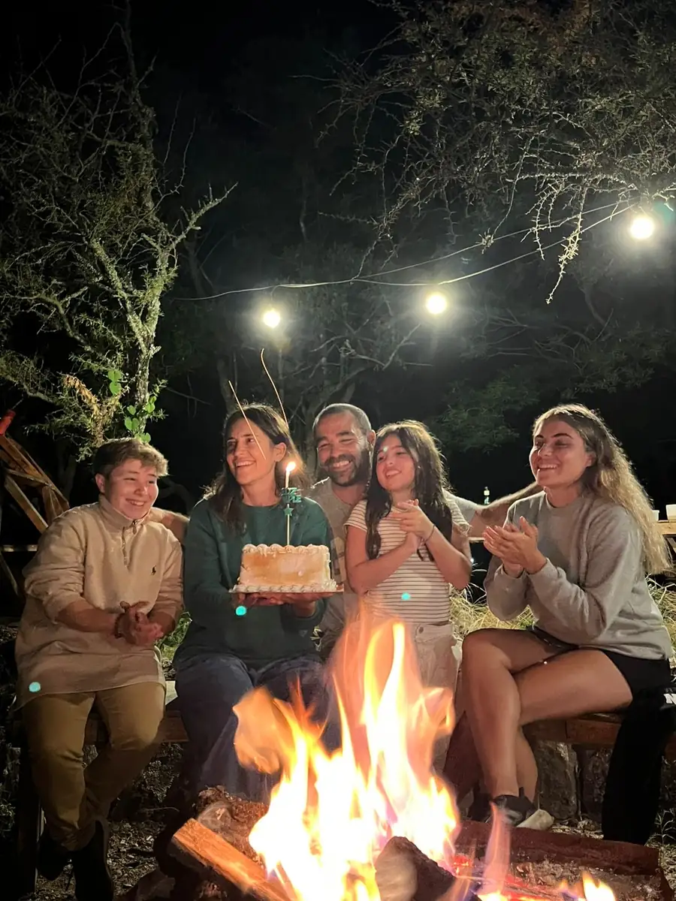

Modo Monte es un proyecto familiar.
Nosotros somos Fran, Emilia, Hernán, Amara y Cruz (de izquierda a derecha) y muchos más que nos ayudan de muchas maneras a concretar este proyecto, que ya es nuestro hogar...
Tuvimos la posibilidad de habitar este lugar desde el 2014 cuando todavía no había agua, ni luz, ni camino. Y esto nos permitió conocer y disfrutar de este montecito de otra manera. Apreciar la salida del sol, de la luna, los bichitos que ya no se ven en la ciudad y toda esta abundante flora y fauna que nos rodea.
Con Modo Monte, intentamos compartir estas vivencias y poder ofrecer la experiencia de lo silvestre con todo el confort de un hotel, para que todos puedan disfrutar de lo que la naturaleza ofrece.